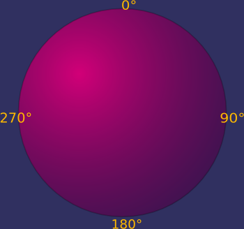

#include <Gosu/AutoLink.hpp> #include <Gosu/AutoLinkMain.hpp> #include <Gosu/Bitmap.hpp> #include <Gosu/Color.hpp> #include <Gosu/Directories.hpp> #include <Gosu/Image.hpp> #include <Gosu/IO.hpp> #include <Gosu/Math.hpp> #include <Gosu/Window.hpp> #include <boost/scoped_ptr.hpp>
The next thing we'll add to the game is the player. We'll use an image of a starship that can be rotated and accelerated using the arrow keys.
First, let's look only at the player's logic. Of course, many games don't need one bit of rotation, but since Gosu includes some helper functions for that purpose, I'll use this lesson to comment on them.
class Player
{
double posX, posY, velX, velY, angle;
public:
Player()
{
posX = posY = velX = velY = angle = 0;
}
};
...
class Player
def initialize
@x = @y = @vel_x = @vel_y = @angle = 0.0
end
...
end
The player's state consists of his position (posX/posY), velocity (velX/velY) and the angle he's looking at, which is a good opportunity to introduce the next concept:

Gosu does not use radians like the C standard library does. Instead, angles are in the range of 0 to 360 (and wrap around in both directions). Also, an angle of 0 means "upwards" (or "upright" where applicable); angles increase clock-wise. If you think this is seriously less intuitive than the radian system, just bug me for a while, I can't wait to write the Gosu::Angle class ;)
So let's look at the actual movement code:
...
void warp(double x, double y)
{
posX = x;
posY = y;
}
void turnLeft()
{
angle -= 4.5;
}
void turnRight()
{
angle += 4.5;
}
void accelerate()
{
velX += Gosu::offsetX(angle, 0.5);
velY += Gosu::offsetY(angle, 0.5);
}
void move()
{
posX += velX;
while (posX < 0)
posX += 640;
while (posX > 640)
posX -= 640;
posY += velY;
while (posY < 0)
posY += 480;
while (posY > 480)
posY -= 480;
velX *= 0.95;
velY *= 0.95;
}
...
...
def warp(x, y)
@x, @y = x, y
end
def turn_left
@angle -= 4.5
end
def turn_right
@angle += 4.5
end
def accelerate
@vel_x += Gosu::offset_x(@angle, 0.5)
@vel_y += Gosu::offset_y(@angle, 0.5)
end
def move
@x += @vel_x
@y += @vel_y
@x %= 640
@y %= 480
@vel_x *= 0.95
@vel_y *= 0.95
end
...
The first three functions should be self-explanatory.
accelerate() makes use of the offsetX/offsetY functions. They are similar to what some people use sin/cos for: For example, if something moved 100 pixels at an angle of 30°, it would pass offsetX(30, 100) pixels horizontally and offsetY(30, 100) pixels vertically.
After accelerate() has or hasn't changed the velocity, move() adds the velocity to the position, watches out that the player is always on-screen and slows down a bit. So far for the logic...
To declare and load the image, we change the code a bit...
class Player
{
boost::scoped_ptr<Gosu::Image> image;
double posX, posY, velX, velY, angle;
public:
explicit Player(Gosu::Graphics& graphics)
{
Gosu::Buffer starfighterFile;
Gosu::loadFile(starfighterFile, Gosu::sharedResourcePrefix() + L"media/Starfighter.bmp");
Gosu::Bitmap bitmap;
Gosu::loadFromBMP(bitmap, starfighterFile.frontReader());
Gosu::applyColorKey(bitmap, Gosu::Colors::fuchsia);
image.reset(new Gosu::Image(graphics, bitmap));
posX = posY = velX = velY = angle = 0;
}
...
class Player
def initialize(window)
@image = Gosu::Image.new(window, "media/Starfighter.bmp", false)
@x = @y = @vel_x = @vel_y = @angle = 0.0
end
...
If you look closely, this is not too different from the way the background image was loaded in GameWindow. So what's different?
Since the player does not know anything about the window, his constructor was changed to take a reference which is then passed to the Image's constructor.
Also, the player's graphics are using Ruby/Gosu's color keying, which always makes fuchsia (0xff00ff, that really ugly pink) transparent.
Also, the player's graphics are stored in BMP format, so loadFromBMP is used. Since BMP files do not have any idea about transparency, we hide all the fuchsia coloured pixels - fuchsia is 0xff00ff, that really ugly pink. (The Gosu::Colors namespace provides a selection of pre-defined Gosu::Color values.) You can do lots of other things with Gosu::Bitmaps before turning them into images, or even create bitmaps dynamically - take a look at the reference if you're interested.
Now all we need to do is to actually draw the image:
void draw() const
{
image->drawRot(posX, posY, 1, angle);
}
def draw
@image.draw_rot(@x, @y, 1, @angle)
end
drawRot is almost as simple to use as draw, except it needs a fourth argument - the angle. If you pass 0 for the angle, the image is drawn unrotated - that's why the Starfighter faces upwards in Starfighter.bmp.
Also, note that now the *center* of the image is drawn at (posX; posY) - *not* the upper left corner, as in draw().
The player is drawn at z=1, i.e. over the background (obviously). We'll replace these magic numbers with something better later.
Of course, a class is pointless if it isn't used anywhere. So let's give GameWindow a player and have it set it up:
class GameWindow : public Gosu::Window
{
boost::scoped_ptr<Gosu::Image> backgroundImage;
Player player;
public:
GameWindow()
: Window(640, 480, false, 20), player(graphics())
{
...
player.warp(320, 240);
}
class GameWindow < Gosu::Window
def initialize
super(640, 480, false, 20)
self.caption = "Gosu Tutorial Game"
@background_image = Gosu::Image.new(self, "media/Space.png", true)
@player = Player.new(self)
@player.warp(320, 240)
end
Tada! To make this lesson's executable actually look any different than the last one's, the player is also drawn in GameWindow's draw() member function:
void draw()
{
player.draw();
backgroundImage->draw(0, 0, 0);
}
def draw
@player.draw
@background_image.draw(0, 0, 0)
end
(The player is deliberately drawn before the background to show the effects of Z ordering.)